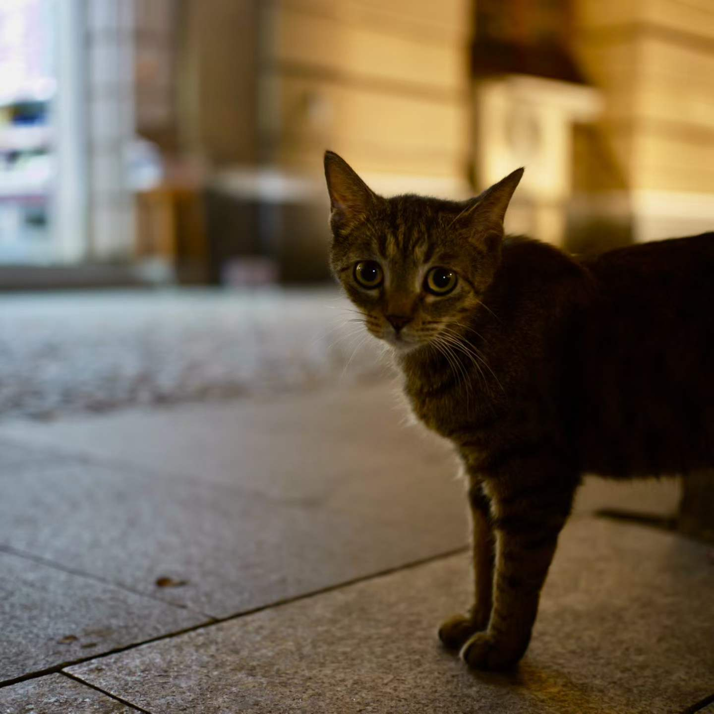
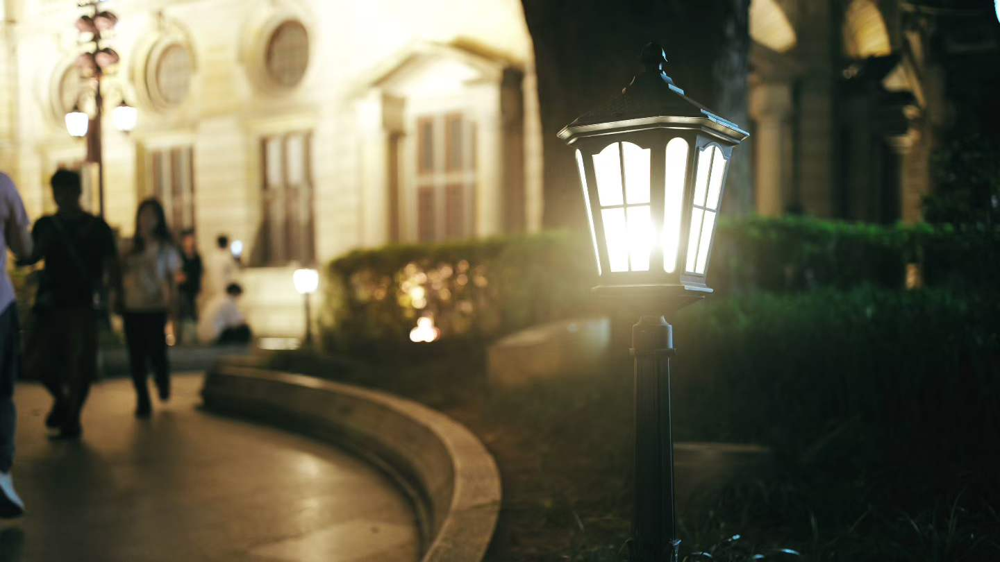
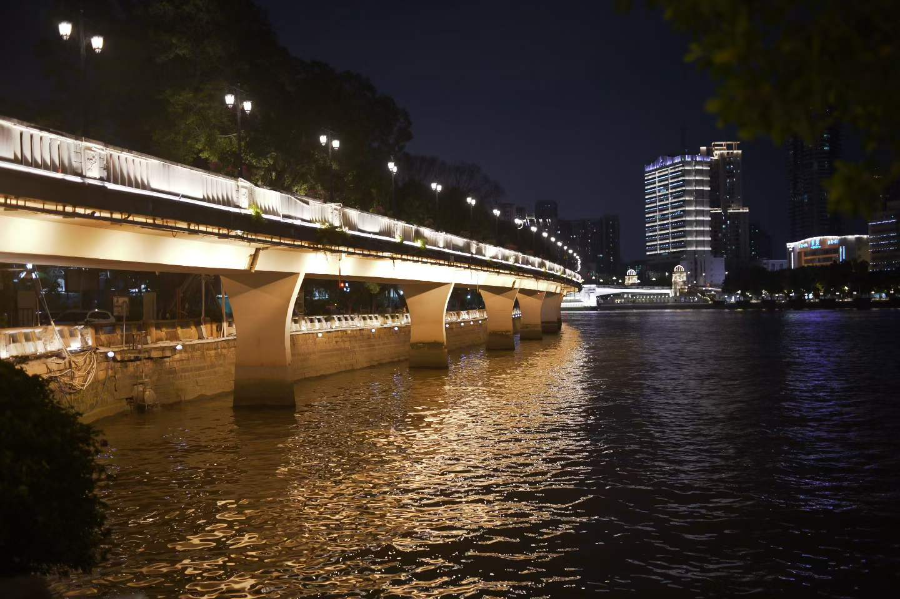
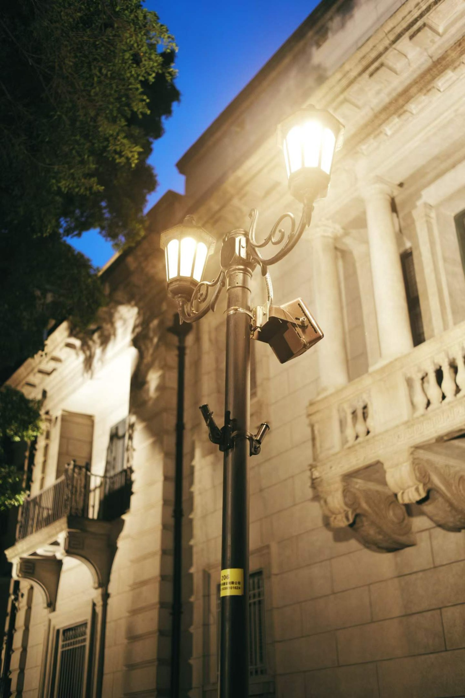
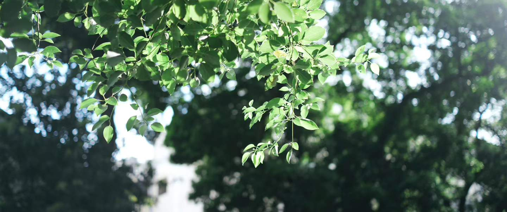
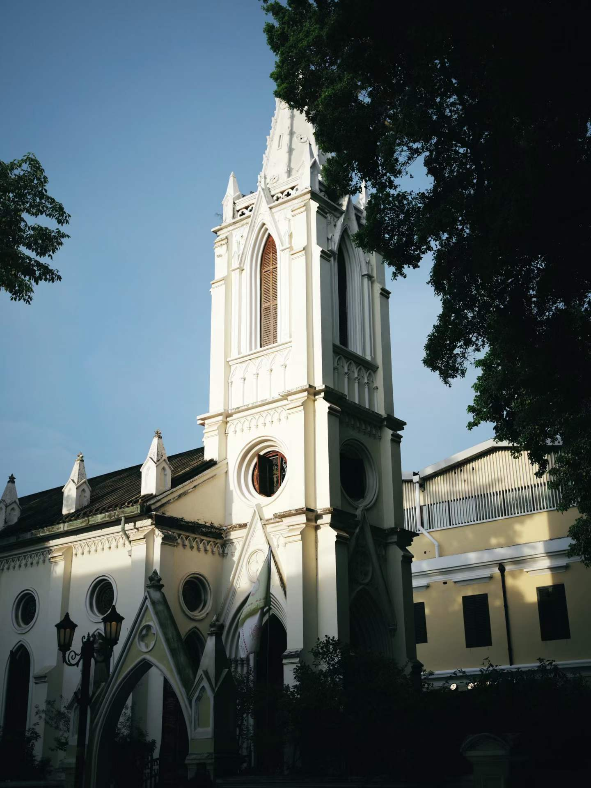
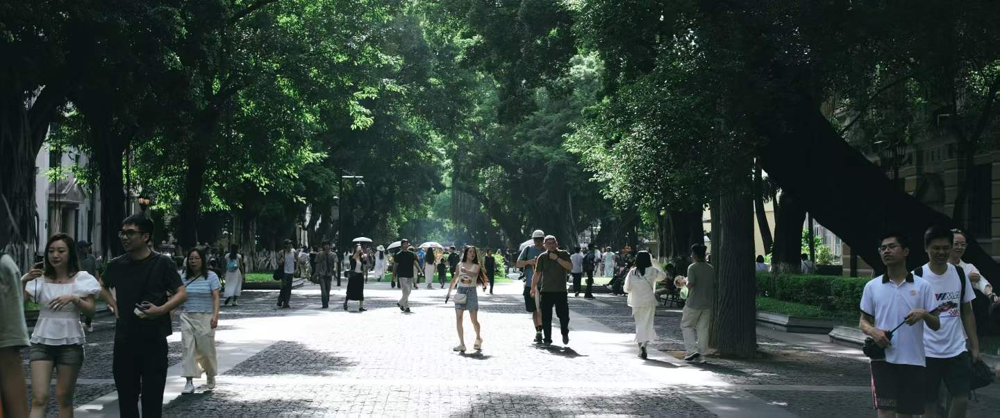

SHIDI WEN

PHOTOGRAPHY · VISUAL STORYTELLING
Quiet moments.
Strong images.
城市、光线、动物与建筑。把日常中值得被记住的瞬间，整理成属于自己的视觉档案。
Selected Works
以街头观察、城市夜景与建筑摄影为主，把不同时间和光线下的城市切片组合成一个完整作品集。

Night Walk
CITY · RIVER · LIGHTS
Architecture
HERITAGE · LIGHT · DETAILMore Stories
绿叶、树荫、人群和老建筑——这些并不是宏大的主题，但它们构成了城市最真实的气息。




ABOUT THE PHOTOGRAPHER
I photograph what deserves to be remembered — light, texture, atmosphere and the small moments between people and the city.
这个网站以你的真实作品为核心，而不是模板图库。网站采用清晰的文件结构，将页面、样式、交互和摄影作品分开管理，方便后续持续更新与维护。
后续可以继续加入人像、Cosplay、商业摄影、拍摄地点、相机参数以及独立作品详情页。